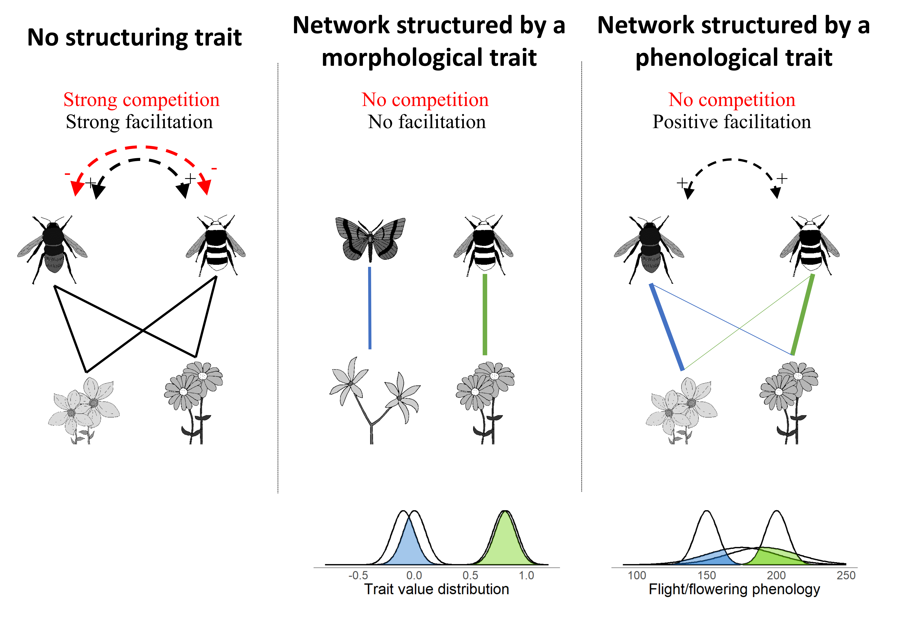

Community Ecology
Phenology and communitiy stability
Almost all studies showing that structural properties of ecological network stabilize communities aggregate observed interactions in time, while recent studies have shown that interaction networks are dynamic over time. Indeed, the seasonal turnover of interactions is high (CaraDonna et al. 2017; Souza et al. 2018; Rabeling et al. 2019), leading to seasonal changes in network structure (Rabeling et al. 2019; CaraDonna & Waser 2020) and suggesting that phenology (i.e. seasonal life-cycle events, such as flowering periods) is an important factor in community structure, and thus in community stability. To try understand how seasonal dynamics affect the community stability I am working on including phenology in an explicit way in dynamics model, at the network scale.
Our work shows that phenology is playing an important role in propagation of indirect effects, favouring facilitation over competition within guilds of pollinators and plants, thereby increasing network persistence (Duchenne et al. 2021). Indeed, phenological trait acts in a special way, by decoupling interactions in time it allows species to share mutualistic partners, and thus positive indirect effects among them, but prevents competition.
For example, in the case of interactions structured by morphological traits, the most common considered case in community ecology, the absence of competition between two pollinators, or plants, is expected to be coupled with the absence of indirect facilitation between these pollinators, or plants, because the species involved do not share mutualistic partners (Fig. below). In contrast, when interactions are structured by phenological traits, they can be decoupled in time thus removing competition but maintaining facilitation between the two pollinators, as they can still share the same mutualistic partners (Fig. below). Thus, in plant-pollinator networks, differences in phenological traits among species might promote greater coexistence than species differences in morphological traits because phenology differences might increase the relative importance of facilitation over competition among plants and among pollinators.

Cheating in mutualism: the good, the bad and the ugly sides
Mutualism, an interaction that benefits all species involved, is widespread in the web of life. In natural systems involving mutualism, it is common to find cheaters, species reaping benefits from interactions without providing benefits to their partners. Cheating has been described in mycorrhizal, plant–pollinator, cleaner fish-client, and seed dispersal interactions.
Cheating is often view from an evolutionary perspective, widely based on game theory, and thus considered as a way to escape the cost associated with mutualism. For example, energy expenditure due to nectar production in plants or foraging in animals, in plant-pollinator networks. In this case, while the species could interact legitimately (i.e., mutualistically), they cheat because to them the cost of cheating is lower than the cost of legitimate interactions. However, the data suggest us another story: species do not cheat to escape the cost of mutualism, but to access new resources that they would not access otherwise. These cheating have completely different consequences for the community: one is replacing mutualistic links by cheating, the other one is adding cheating without modifying the existing mutualistic links. So in the second case, species innovate by interacting with a new partner, let’s call it innovative cheating. In the second case, species just cheat on their existing partner, we will call it conservative cheating, in opposition ot the innovative one.
In a recent work initiated during the master thesis of S. Aubert, we used generalized Lotka–Volterra models to show that these tw kinds of cheating have very different consequences for the persistence of the community. Conservative cheating negatively affects community persistence, while innovative cheating can enhance community persistence under some conditions: when cheaters have few mutualistic partners, cheat at low or intermediate frequency and the cost associated with mutualism is not too high. Under these conditions, the negative effects of cheating on partner persistence are overcompensated at the community level by the positive feedback loops that arise in diverse mutualistic communities.
But the story did not stop here, we then used an empirical dataset of plant–bird interactions (hummingbirds and flowerpiercers), and we found that observed cheating patterns were highly consistent with the theoretical cheating patterns found to increase community persistence! This result suggests that the cheating patterns observed in nature could contribute to promote species coexistence in mutualistic communities, instead of necessarily destabilizing them.